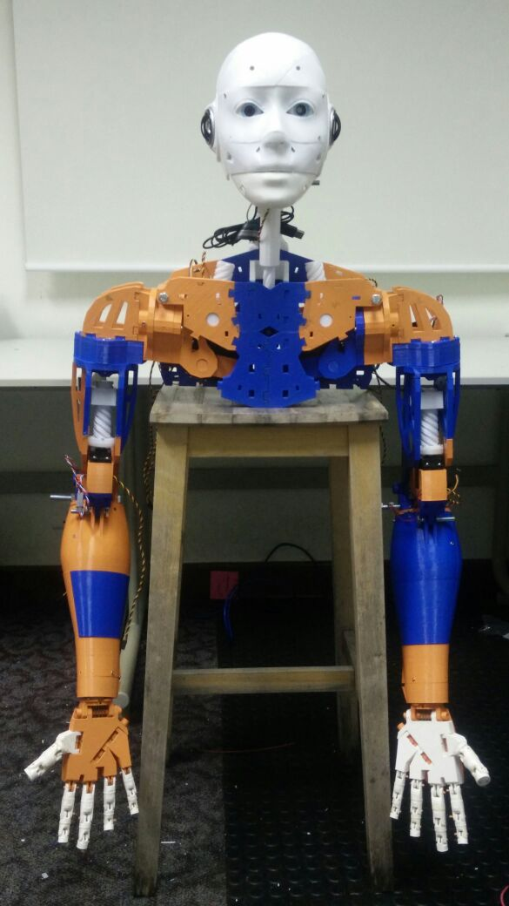

EDUCATION
Master of Software Engineering
National University of Singapore
Jan 2017 - Now
Bachelor of Computer Science & Technology
Xi'an Jiaotong University
Sep 2011 - Jun 2015
System Engineer Intern
Qingdao Sanaizhongli New Energy Resources Technology Co., Ltd, China
Sep 2015 - Mar 2016
- Worked on intelligent building system
- Responsible for requirements analysis, and module integration
- Circuit design with AutoCAD
Software Engineer Intern
Xi’an Software Outsourcing Co., Ltd, China
Jul 2014 – Sep 2014
- Developed a take-out ordering system for Web Client and Android
- Framework of Hibernate + Spring
- Utilized Oracle 10g, JAVA, JavaScript and HTML5
Humanoid Project
Mar 2017 – Now

- Focus on robot software development with JAVA and Python
- Refer to face recognition, object tracking, speech interaction
Medicine Management Application
Mar 2017 – Apr 2017
- Android programme
- Functions cover records, statistics, and remind
School Affairs Management System
2013
- Homepage of Xi’an Politics College
- Utilize PHP, MySQL, JavaScript, HTML
Research Project
2013 - 2014
- Analysis of instrumental performance based on information processing
- Refer to frequency analysis and automaton
- Responsible for data procession and programming
- Conducted by the president of School of Electronic and Information Engineering
SKILLS
C++
Python
JavaScript
Machine Learning
SQL
Java
Matlab
Data Analysis
R
Git
MORE
Strong Desire for knowledge, and intense curiosity
Interest in music and reading, like playing badminton
Was the director of symphony orchestra in Xi’an Jiaotong University